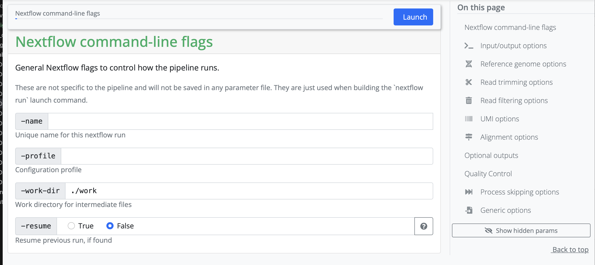

nfcore RNAseq pipeline
Great, now we have tested that nextflow and nf-core are set up correctly. Now we want to use the pipeline on our own data. For the sake of the tutorial, I will use the RNAseq data some of you have worked earlier on.
As a little reminder: the data is located in:
medbioinfo2025/common_data/RNAseqYou can also work on one of the other datasets - I would recommend using the nf-core/mag pipeline for the metagenomics data set.
The necessary databases for that are available on the server at /pfs/data/databases.
To practice we will go through some of the steps you have done before:
Create the Pixi environment
While initializing, make a new directory for this analysis - think about naming it something with meaning.
What dependencies do you need for nextflow and nf-core?
Link your data into the directory
Make a subdirectory, data, change into it and create a symlink to the data:
Use ln -s SOURCE TARGET. Since you are in the directory datathe TARGET is simply ..
Change back to the parent directory.
This is how my project directory looks like afterwards:
.
├── data
│ ├── SRR5223504_1.fastq.gz -> ../../common_data/RNAseq/SRR5223504_1.fastq.gz
│ ├── SRR5223504_2.fastq.gz -> ../../common_data/RNAseq/SRR5223504_2.fastq.gz
│ ├── SRR5223517_1.fastq.gz -> ../../common_data/RNAseq/SRR5223517_1.fastq.gz
│ ├── SRR5223517_2.fastq.gz -> ../../common_data/RNAseq/SRR5223517_2.fastq.gz
│ ├── SRR5223546_1.fastq.gz -> ../../common_data/RNAseq/SRR5223546_1.fastq.gz
│ ├── SRR5223546_2.fastq.gz -> ../../common_data/RNAseq/SRR5223546_2.fastq.gz
│ ├── SRR5223559_1.fastq.gz -> ../../common_data/RNAseq/SRR5223559_1.fastq.gz
│ └── SRR5223559_2.fastq.gz -> ../../common_data/RNAseq/SRR5223559_2.fastq.gz
├── pixi.lock
└── pixi.tomlnf-core launch
Nf-core helps you set up the pipelines with the nf-core launcher. To access that, click on the launch version 3.19.0 button on the nf-core/rnaseq homepage. (This was the version available in the launcher at the time of writing this session. The version number will change in the future). We are then redirected to a page where we can fill in all of our information about input files, as well as selecting or deselecting certain parts of the pipeline. We will share the things here that you need to input each time, and go through some finer details based on the discussion with you.
Setting working and results directories
We recommend that you use absolute paths rather than relative paths for setting up your runs.
During the first part, you need to set a working and result directory. If you are using a server that has a profile established, you can put the name of the server there. In our case, we will use the server configuration file locally.
Set resume to True, otherwise you don’t need to change anything here.

Next, the pipeline asks for the input CSV. Exact requirements for how that input file should look like can be found under the tab Usage on the pipeline homepage. This input CSV is unique to each analysis.

Create the necessary input file and add the path to it in the launcher.
Set the outdir to the name and path to a directory you want the output to be saved to.
Setting all other inputs that are required
In this section, you set variables that are related to your reference genome. If you are using something listed on iGenomes, you can input that name. If you are working with your own reference genome, or something not listed, you need to input the absolute path of the reference genomes you have downloaded.

Depending on your strategy, you might need to input a corresponding gff as well. It really depends on the kind of analysis you are hoping to perform.
In our case, we have human samples, so in theory we can use the iGenomes reference. However, the transcriptome and GTF files in iGenomes are out of date, so nf-core recommends downloading and using the more up-to-date version.
Let’s do that.
Then, add the names and path to the downloaded reference (if located in a different directory) files in the launcher.
Other than the options above, you don’t need to change anything to run the pipeline. However, for your project you might want to change some of the default parameters. For this evercise we will keep the rest as is.
Getting your JSON file
Once everything is filled in, click on Launch and you will be redirected to another page containing your JSON file that has information on your run.
Copy the JSON file a bit lower on the screen and saving it as nf-params.json in your folder on HPC2N.
Add the save_reference line as recommended by nf-core (because we are using their downloaded human genome).
Configuration profile
As before, you need the HPC2N configuration file, with the correct project ID.
Add your e-mail under email and you will receive a message with a summary of the run.
Starting The Run
The launcher gives us the command to run the pipeline:
nextflow run nf-core/rnaseq -r 3.19.0 -resume -params-file nf-params.jsonWe need to change this slightly, to add that we are running it via Pixi, and to add the server specific configuration file:
submit directly via pixi
Now you can run the pipeline with the following command (you might have to change it a bit to add pathways to files that are not in your current working directory):
pixi run nextflow run nf-core/rnaseq -r 3.19.0 -resume -params-file nf-params.json -c hpc2n.configThere are several layers to this command:
First we invoke Pixi and tell it to run the following commands.
Then we say which program we want to run, namely Nextflow.
The following commands are Nextflow/ nf-core commands:
- we want to
runthenf-core/rnaseqpipeline, version3.19.0 - we want to use the parameter file called
nf-params.json - we want to use the hpc configuration file called
hpc2n.config
submit via sbatch
Alternatively, you can run nextflow via pixi using a batch script and slurm: copy the following text to file called name_submit_rnaseq.sh where name is your name.
#!/bin/bash -l
#SBATCH -A our_proj_allocation
#SBATCH -n 5
#SBATCH -t 24:00:00
/your_home_directory/.pixi/bin/pixi run nextflow run nf-core/rnaseq -r 3.19.0 -params-file /your_path/nf-params.jsonAnd then submit it to slurm with
sbatch name_submit_rnaseq.shYou can check the progress of your job with squeue -u your_username
And now we wait until the run is done! - My run took a little more than five hours for all four samples.
Nextflow is notoriously bad at cleaning after itself. You can check previous runs with pixi run nextflow log. And then clean up with for example pixi run nextflow clean -f -before <run_name>. Here is an explanation of the command.